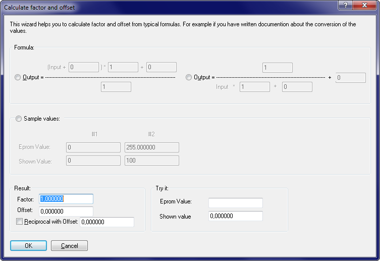

|
Calculate factor and offset |

  
|
|
Calculate factor and offset |
|
u Video |
This wizard helps you to determine the factor and offset based on various source data. This is useful if you have information about the conversion of the eprom values which cannot be entered directly in WinOLS (as factor and offset) due to their format. You can access this dialog via the f(x) button in the map properties window.

Regardless of which of the 5 variants you choose, the wizard immediately calculates the factor and offset and displays them in the bottom left corner and applies them to the map in the background for testing purposes. This happens only if this is mathematically possible (e. g. no division by 0). In addition, you have the option of having individual values converted on the basis of the determined data for testing purposes.
1) and 2) given formulas
If you have the source formula, you can simply select the appropriate formula here and enter the values. For example, you might have the following conversion formula:
VAL = 100/ (0.00001 * N)
First select the type of formula. The input size in the example is below the fraction line, so it is the right formula. Enter the values. The number 100 above the fraction line. The number 0.00001 below the fraction line as a factor. In our example, no further value is added. So just leave the additive variable under the fraction line at 0.
3) Flexible formula
In this input field you can enter a formula (such as "(input+3)*10") or select a predefined formula and insert its (up to 4) parameter values on the right.
For all formula formats, you can activate the checkbox "Swap Input/Output". Use this if your source formula is formulated backwards, i. e. converts displayed values to eprom values.
4) Example values
If you have sample values for the displayed value and the corresponding eprom value, you can enter them here. Normally, two pairs of values are sufficient to determine the data. Only when using reciprocal values 3 values are required. It is important that the values for #1 and #2 (and possibly #3) are not identical.
5) Corner values
This is a variation of the example values in which the system automatically determines the eprom values from the project. You then only need to enter the displayed values. Pick 2 or 3 corners from the map with different values and enter their display values. If there are not enough different basic values in the map, this method cannot be used.
Swap input/output
If your source formula defines how to calculate the eprom values from the displayed values, then input and output are reversed. This checkbox causes WinOLS to calculate the corresponding inverse formula.
Reciprocal?
If you do not have the formula, it is difficult to see if a reciprocal value (1/x) is used only on the basis of the values. Therefore, it is best to try it first without, using 2 values. These 2 will probably be converted correctly (you can see this in the background in hexdump). If other values are still wrong, activate the reciprocal (= the third input value) at 3) or 4).
Shortcuts
| Symbol bar: | - |
| Keyboard: | - |